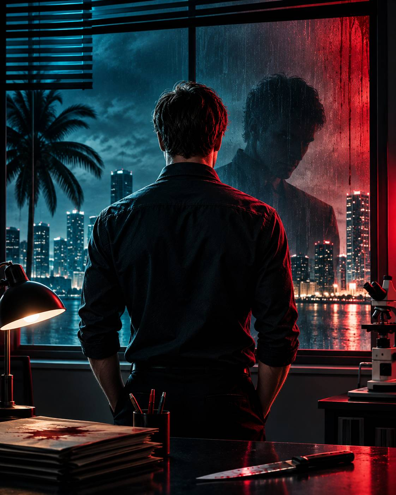

اگر دنبال سریالی هستی که هم هیجان جنایی داشته باشد و هم با پرسشهای اخلاقی ذهنت را درگیر کند، نقد و بررسی سریال دکستر میتواند نقطهٔ شروع خوبی برای تصمیمگیری باشد. این راهنمای تماشا اول مسیر دیدن مجموعهها را روشن میکند، بعد فصلها و شخصیتها را بدون اسپویل مرور میکند و در پایان، نکتههای فنی و دانستنیهای جذاب را کنار هم میگذارد.
سریال دکستر درباره چیست؟
داستان دربارهٔ دکستر مورگان است؛ متخصص تحلیل الگوهای پاشش خون در پلیس میامی که در ظاهر زندگی آرام و معمولیای دارد. اما او رازی تاریک را پنهان میکند: دکستر یک قاتل زنجیرهای است که طبق قواعدی آموزشدیده، مجرمانی را هدف میگیرد که از چنگ قانون گریختهاند. این تضاد میان زندگی روزمره و هویت پنهان او، هستهٔ اصلی جذابیت سریال است.
دکستر فقط یک معمای جنایی دربارهٔ پیدا کردن مجرم نیست. سریال ما را به ذهن شخصیت اصلی نزدیک میکند و میپرسد آیا میتوان انگیزههای کسی را فهمید، بیآنکه کارهایش را تأیید کرد؟ ترکیب تعلیق، طنز تلخ و کشمکش اخلاقی، فضای منحصربهفرد مجموعه را شکل میدهد.

ترتیب تماشای سریال دکستر؛ از کجا شروع کنیم؟
اگر تازه میخواهی دکستر را شروع کنی، اول هشت فصل سریال اصلی را ببین. New Blood و Resurrection ادامهٔ داستاناند؛ یعنی ماجرا را پس از اتفاقهای سریال اصلی دنبال میکنند. اما Original Sin دربارهٔ سالهای پیش از آن است و داستان جوانی دکستر را نشان میدهد. برای فهم خط اصلی، دیدنش لازم نیست؛ میتوانی آن را بعدتر و فقط از روی علاقه ببینی.
- ۱شروع ضروری
Dexter
سریال اصلی؛ ۸ فصل و ۹۶ قسمت. اینجا با دکستر، دبرا و قواعد داستان آشنا میشوی.
- ۲ادامهٔ اصلی
Dexter: New Blood
ادامهٔ داستان پس از پایان سریال اصلی؛ برای فهمیدن مسیر بعدی دکستر تماشایش کن.
- ۳اختیاری؛ داستان گذشته
Dexter: Original Sin
داستانی از سالهای جوانی دکستر که پیش از سریال اصلی میگذرد؛ برای دنبالکردن ادامهٔ ماجرا ضروری نیست.
- ۴ادامهٔ داستان
Dexter: Resurrection
ادامهٔ بعدی جهان دکستر که پس از New Blood روایت میشود.
خلاصه: برای دنبالکردن داستان اصلی، Dexter را از فصل اول ببین، بعد New Blood و سپس Resurrection را تماشا کن. Original Sin ماجرایی از گذشتهٔ دکستر است؛ دیدنش اختیاری است و میتوانی بعد از آشنایی با سریال اصلی سراغش بروی.
جذابیت ادامههای دکستر تا حد زیادی به شناختی وابسته است که در هشت فصل سریال اصلی به دست میآوری. اگر از مجموعه بیشتر خواستی، ترتیب انتشار بالا کمک میکند تغییرهای داستانی را طبیعیتر دنبال کنی.
بررسی فصلهای سریال دکستر
مرور فصلها تا جای ممکن بدون اسپویل نوشته شده است. هر فصل حالوهوای خودش را دارد، اما برای دنبالکردن تحول شخصیتها بهتر است هیچکدام را از ترتیب اصلی حذف نکنی.
ورود به ذهن دکستر
فصل اول زندگی دوگانهٔ دکستر، کارش در پلیس میامی و قواعدی را معرفی میکند که برای کنترل رفتار خود دنبال میکند. کشش فصل فقط به معمای جنایی محدود نیست؛ پرسش مهم این است که او تا چه اندازه میتواند ظاهر عادیاش را حفظ کند.
برای آشنایی با جهان سریالوقتی رازها به سطح میآیند
فشار بیرونی بر زندگی دکستر بیشتر میشود و پنهانکاری او شکنندهتر از قبل به نظر میرسد. تعلیق و درگیری روانی این فصل از نزدیکشدن خطرها به زندگی شخصی شخصیت اصلی میآید.
تعلیق و فشار روانیرابطهها و مرزهای تازه
این فصل بیش از آنکه فقط بر یک پرونده تکیه کند، به رابطههای دکستر و اثر آنها بر انتخابهایش میپردازد. ریتمش آرامتر است، اما برای دنبالکردن تحول شخصیت اهمیت دارد.
تمرکز بر رابطههابرخورد با یک زندگی ظاهراً عادی
ورود یک قاتل تازه، داستان را به تقابلی پرتنش میبرد و همزمان تصویری از زندگی خانوادگی و پنهانکاری ارائه میدهد. بسیاری از طرفداران این فصل را یکی از نقاط اوج سریال میدانند.
یکی از فصلهای برجستهادامهدادن پس از یک بحران
فصل پنجم به پیامدهای یک بحران مهم و واکنش دکستر و اطرافیانش میپردازد. شاید بهاندازهٔ فصل چهارم پرضرباهنگ نباشد، اما از نظر عاطفی در مسیر شخصیت اصلی جایگاه مهمی دارد.
پیامدهای عاطفیایمان، ترس و معنای مجازات
موضوعهایی مثل ایمان، اخلاق و مجازات فضای متفاوتی به این فصل میدهند. واکنش مخاطبان به آن یکدست نیست، اما برای دنبالکردن مسیر داستان باید آن را دید.
حالوهوای متفاوترازهایی که پنهان نمیمانند
پیامدهای فاششدن رازها رابطهٔ دکستر با نزدیکترین آدمهای زندگیاش را تغییر میدهد. اعتماد، انتخاب و هزینهٔ پنهانکاری در مرکز درام قرار میگیرند.
پیامدهای تصمیمهاپایان مسیر سریال اصلی
فصل هشتم داستان مجموعهٔ اصلی را جمعبندی میکند، اما واکنشها به انتخابهای پایانی آن متفاوت بوده است. بهتر است پیش از تماشا دربارهٔ جزئیات پایان جستوجو نکنی.
پایان بحثبرانگیزاسپویل: سرنوشت دکستر در پایان فصل هشتم
دکستر پس از مجموعهای از فقدانها و تصمیمهای دشوار، از آدمهای نزدیکش فاصله میگیرد و در مکانی دورافتاده به زندگی تازهای پناه میبرد. این پایان زمینهٔ داستانی New Blood را فراهم میکند.
جمعبندی فصلها در یک نگاه
- برای آشنایی با ایده و شخصیتها: فصل اول
- برای تعلیق و فشار روانی: فصل دوم و چهارم
- برای دنبالکردن تحول عاطفی دکستر: فصل سوم و پنجم
- برای دیدن پیامدهای رازهای او: فصل هفتم
- برای رسیدن به ادامهٔ داستان: فصل هشتم و سپس New Blood
این تقسیمبندی فقط راهنمای حالوهوای فصلهاست، نه پیشنهادی برای ردکردن آنها. اگر میخواهی داستان را کامل تجربه کنی، فصلها را بهترتیب تماشا کن.
چرا شخصیتهای دکستر تا این حد ماندگارند؟
یکی از دلایل ماندگاری سریال این است که از قالب یک داستان جنایی ساده فراتر میرود و سراغ تنهایی، تضاد درونی و مرز میان شناختن یک شخصیت و تأییدکردن رفتار او میرود.
دکستر مورگان؛ قهرمان یا تبهکار؟
دکستر ضدقهرمانی خاکستری است. او قاتل است، اما قواعدی دارد و تلاش میکند فقط کسانی را هدف بگیرد که بهگمان خودش سزاوار مجازاتاند. همین نظم، او را به شخصیتی پیچیده تبدیل میکند و تماشاگر را وامیدارد دربارهٔ انگیزهها و انتخابهایش فکر کند.
«کد هری» چارچوبی است که پدرخواندهاش برای مهار رفتار دکستر به او آموخته است. تماشای تلاش او برای ایفای نقش یک آدم عادی، در کنار ذهنیت پنهانش، یکی از کششهای اصلی سریال است.
دبرا مورگان؛ تضاد و هیجان داستان
اگر دکستر آرام و حسابگر است، دبرا پرشور، صریح و گاهی بیپرده رفتار میکند. رابطهٔ خواهر و برادری آنها قلب عاطفی سریال است: دبرا به دکستر وابستگی دارد، اما همزمان کسی است که میتواند نقاب او را به چالش بکشد.
تضاد میان اخلاق حرفهای دبرا و دنیای پنهان دکستر، موتور مهمی برای تنش داستان میسازد و باعث میشود رابطهٔ آنها فقط یک خط فرعی نباشد.

شخصیتهای مکمل؛ آینههایی برای دکستر
همکاران پلیس، دوستان و دشمنان دکستر فقط برای پرکردن داستان حضور ندارند. هرکدام فاصلهٔ او را با زندگی عادی یادآوری میکنند یا بخش پنهانی از شخصیتش را به چالش میکشند. تغییرهای دکستر در طول فصلها تا حد زیادی از برخورد او با این آدمها شکل میگیرد.
اسپویل: تأثیر شخصیتهای مکمل بر مسیر دکستر
برخورد با شخصیتهای نزدیک به دکستر گاهی او را مجبور میکند نقابش را تغییر دهد و گاهی به انزوای بیشتر سوقش میدهد. انتخابهای او در فصلهای پایانی، از پیامد رابطهها و تجربههایی میآیند که در طول مجموعه شکل گرفتهاند.
جنبههای فنی و هنری؛ فراتر از یک سریال جنایی
دکستر چند انتخاب روایی و بصری دارد که تماشاگر را به ذهن شخصیت اصلی و فضای شهر نزدیک میکند:
راوی اولشخص
شنیدن افکار درونی دکستر در کنار رفتار آرام او، فاصلهٔ میان چیزی را که به دیگران نشان میدهد و چیزی را که در ذهنش میگذرد آشکار میکند. این روایت، مخاطب را به زاویهٔ دید او نزدیک نگه میدارد.
تدوین و موسیقی
ضربآهنگ تدوین و موسیقی، تنش یا آرامش کاذب صحنهها را تقویت میکند و به هر پرونده و رابطه، حالوهوای خودش را میدهد.
تصویربرداری و رنگ
رنگهای گرم و پرجنبوجوش میامی در کنار دنیای تاریک ذهن دکستر، تضادی بصری میسازد که با دوگانگی شخصیت اصلی هماهنگ است.
دانستنیهای جالب دربارهٔ سریال دکستر
چند نکته دربارهٔ ریشههای داستان و شیوهٔ روایت، تماشای دوبارهٔ سریال را هم جذابتر میکند:
الهامگرفته از رمان
سریال از مجموعهرمانهای جف لیندزی، نویسندهٔ Darkly Dreaming Dexter، الهام گرفته است؛ بااینحال، اقتباس تلویزیونی در ادامه مسیر داستانی خودش را پیدا میکند.
صدای ذهنی، بخشی از هویت سریال
روایت درونی دکستر فقط اطلاعات نمیدهد؛ گاهی طنز سیاه میسازد و گاهی توجیههایی را نشان میدهد که او برای رفتار خودش میآورد. همین انتخاب، مخاطب را همزمان نزدیک و منتقد نگه میدارد.
شخصیت در مسیر زمان تغییر میکند
دکستر در طول فصلها ثابت نمیماند. رابطهها، فقدانها و پیامد تصمیمهایش بهتدریج تصویری متفاوت از او میسازند؛ به همین دلیل دنبالکردن فصلها بهترتیب اهمیت دارد.
امتیاز IMDb دکستر و بازخورد کاربران؛ این سریال مناسب چه کسانی است؟
اگر این ویژگیها را دوست داری، احتمالاً دکستر هم برایت جذاب است
- داستانهای جنایی و معمایی با تعلیق پیوسته
- ضدقهرمانهای پیچیده و پرسشهای اخلاقی بدون جواب ساده
- روایت اولشخص، طنز تلخ و شخصیتمحوری
اگر با خشونت تصویری، موضوعهای بزرگسالانه یا تفاوت کیفیت و ریتم میان فصلها راحت نیستی، بهتر است پیش از شروع این نکتهها را در نظر بگیری. بازخورد کاربران هم نشان میدهد که تجربهٔ تماشای همهٔ فصلها برای همه به یک اندازه رضایتبخش نیست.
جمعبندی؛ آیا تماشای دکستر ارزش وقت گذاشتن دارد؟
اگر شخصیتهای خاکستری، درام جنایی و داستانهایی را دوست داری که پاسخ اخلاقی سادهای ندارند، دکستر میتواند انتخابی درگیرکننده باشد. شخصیتپردازی پیچیده، معماهای جنایی و تنش روانی از مهمترین نقاط قوت آناند. در مقابل، ریتم بعضی فصلها کندتر میشود و پایان سریال اصلی برای همهٔ مخاطبان قانعکننده نیست.
نقاط قوت
- شخصیتپردازی چندلایه و پرسشهای اخلاقی
- پروندههای جنایی و تعلیق جذاب
- روایت اولشخص و فضای متمایز میامی
نکتههایی که باید در نظر بگیری
- ریتم برخی فصلها افتوخیز دارد
- پایان سریال اصلی بحثبرانگیز است
- فضای داستان شامل خشونت و موضوعهای بزرگسالانه است
پیشنهاد ما برای شروع ساده است: از فصل اول Dexter آغاز کن و هشت فصل سریال اصلی را بهترتیب ببین. بعد، اگر ادامهٔ ماجرا را میخواهی، New Blood و Resurrection را تماشا کن. Original Sin داستان جوانی دکستر و مربوط به پیش از سریال اصلی است؛ برای فهم ادامهٔ داستان لازم نیست و هر وقت خواستی میتوانی آن را ببینی.
دیدن نقشهٔ راه تماشامنابع و اطلاعات تکمیلی
ترتیب مجموعههای تلویزیونی دکستر در این راهنما بر اساس فهرست رسمی Paramount+ تنظیم شده است:
راهنمای رسمی ترتیب تماشای مجموعههای Dexter در Paramount+